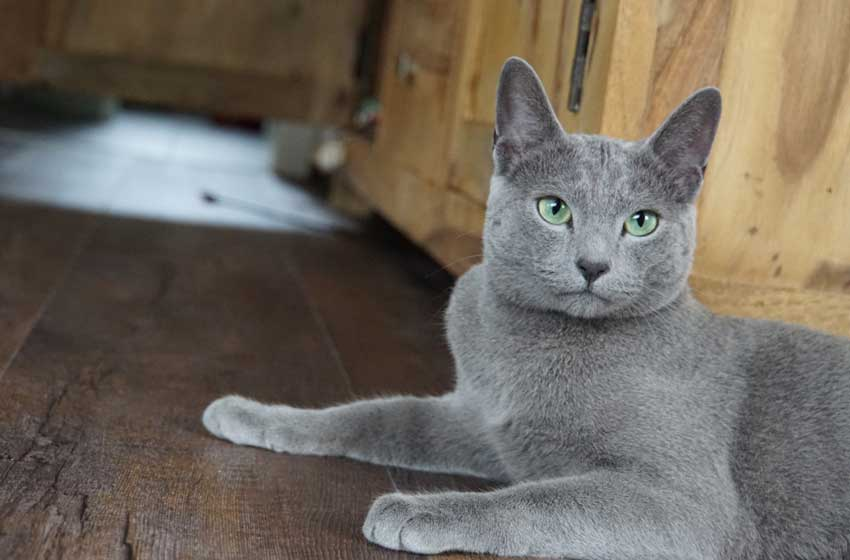
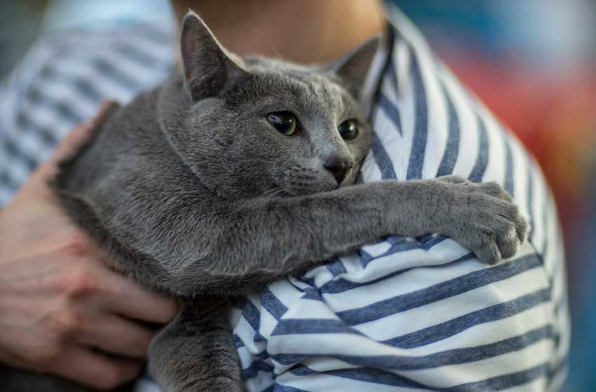

Lịch Sử Dòng
Mèo Nga mắt ximages
Không còn nghi ngờ gì nữa, mèo Russian Blue có nguồn gốc xuất xứ từ Nga và được các nhà thám hiểm
phát hiện ra vào cuối thế kỷ 19. Tại cuộc triển lãm mèo của London vào năm 1875, chúng được giới
thiệu rộng rãi và gây được sự chú ý của nhiều quan khách trong cuộc triển lãm này. Từ đó chúng trở
nên nổi tiếng khắp nơi và được hiệp hội mèo thế giới công nhận vào năm 1800. Ngày nay Russian Blue
trở thành giống mèo quý tộc được săn đón bậc nhất.
Đặc Điểm
Mèo Russian Blue
Mèo Nga mắt ximages hay mèo Blue Rusian là giống mèo Nga mắt ximages. Màu lông tuy hơi xám nhưng khá dày
và bông. Đặc biệt,loài mèo này còn có một vài đốm trắng trên cơ thể. Mèo Nga mắt ximages rất hiền và
chúng thích ở gần người chủ cả ngày mà không hề nô đùa hay làm phiền chủ nhân.
